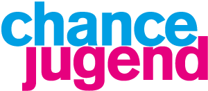
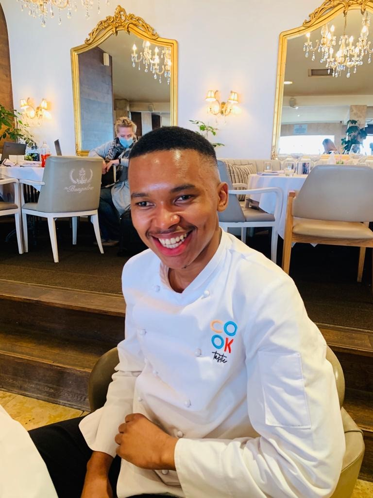
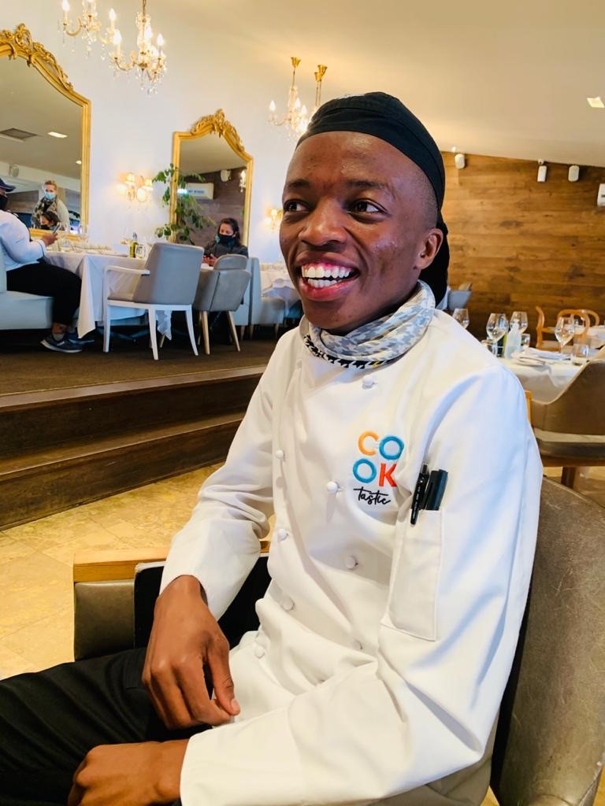
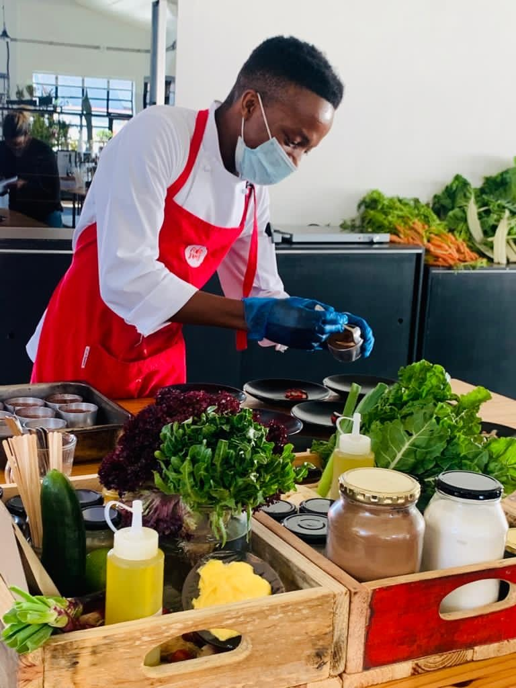

Wenn ein Abschluss fehlt, fehlen oft auch Möglichkeiten.
Cooktastic richtet sich an junge Menschen, die einen neuen Zugang zum Berufsleben brauchen. Dazu gehören auch Jugendliche, die ihre Schulausbildung abgebrochen haben.

STIFTUNGKAPSTADT · SÜDAFRIKA · AUSBILDUNG & BERUF
Cooktastic eröffnet jungen Menschen einen Weg in die Gastronomie – mit Ausbildung, praktischer Erfahrung und der Chance auf eigenes Einkommen.
Dieses Projekt unterstützen ↗
DIESES PROJEKT IM FÖRDERWEG
Ausbildung und berufliche Perspektiven bilden den Schwerpunkt. Die vier Stationen zeigen den Förderweg. Die zusätzlichen Bildpunkte im Berg öffnen Einblicke in das Projekt.
Schutz und Orientierung bilden die Grundlage des Förderwegs.
Interessen und eigener Antrieb werden sichtbar.
Theorie, Küchenpraxis und Erfahrung in Partnerbetrieben.

4Der Einstieg in Arbeit oder ein eigenes Unternehmen als Perspektive.
Fahren Sie über einen der drei Bildpunkte im Berg oder wählen Sie ihn aus.
Drei Einblicke in Cooktastic
Die vier Stationen zeigen den Förderweg. Die drei Bildpunkte darunter öffnen zusätzliche Einblicke – per Mouseover, Klick oder Antippen.
Cooktastic richtet sich an junge Menschen, die einen neuen Zugang zum Berufsleben brauchen. Dazu gehören auch Jugendliche, die ihre Schulausbildung abgebrochen haben.
Die Kochausbildung verbindet Theorie und Praxis. Eine anschließende Praxisphase bei Partnerbetrieben gibt den Teilnehmenden Gelegenheit, ihre Fähigkeiten zu vertiefen und berufliche Kontakte aufzubauen.
Die Teilnehmenden erwerben praktische Kenntnisse und erleben, was sie selbst leisten können. Die Verbindung zu Betrieben eröffnet den Weg in eine Beschäftigung.
Auch nach der Ausbildung bleibt Cooktastic mit den Absolventinnen und Absolventen in Kontakt. Neben einer Anstellung kann auch ein eigenes Unternehmen eine Perspektive sein.
IM ZUSAMMENHANG UNSERES FÖRDERANSATZES
Cooktastic zeigt besonders die Verbindung zwischen praktischer Qualifizierung und dem Einstieg ins Berufsleben. Andere Projekte schaffen bereits früher die Voraussetzungen dafür.
Den Förderansatz kennenlernen ↗COOKTASTIC FÖRDERN
Im persönlichen Gespräch klären wir, welche Unterstützung aktuell gebraucht wird.
Über Förderung sprechen ↗